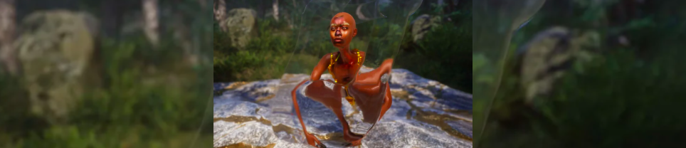
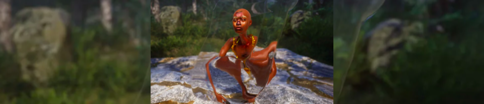
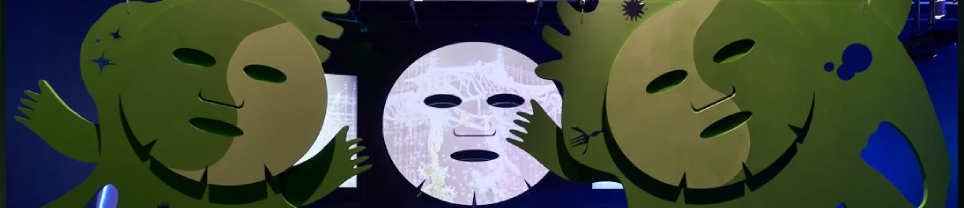
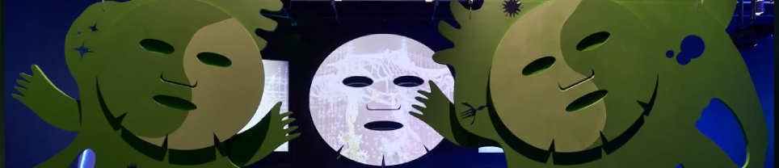

I am a Creative Producer of visual arts, who especializes in Art + Tech.
Currently I am training at Manchester Codes to become a Full Stack Developer.
When I'm not happily
typing in front of my screens, you can find me directing theatre plays, thinking
about video games, or learning new things.
I'm Carlos Marfil, a Junior Software Developer with a passion for telling stories.
Currently training at Manchester Codes.
Click on the images below to know more about my past projects:
Laughing with
WRITER
Part academic research, part a love letter to video games. In this article I explore Final Fantasy X's lore,
following every lead I find and tracing it back to what makes us humans.
Read the article
Following the Gourd
PRODUCER
Following the Gourd by Ebun Sodipo (UK) was developed in collaboration with young LGBTQ+ people online,
led by a small group of Black trans people: The Cartographers Committee.
Visit project's website
Augmented Empathy
PRODUCER
In Augmented Empathy, the collective explores the subversion of existing tools -in this case,
Instagram filters- and how social media can be used as a space for exchange and artistic creation.
The result was 4 Instagram filters which can be downloaded and used by anyone.
Learn more about this project
Birthday Garden
PRODUCER
In Birthday Garden, Yaloo invites us into an immersive underwater garden inspired by coming-of-age stories and
symbols of Korean culture. The work follows her journey through
memories and experiences of culture, at home and around the globe, to explore identity and gender roles in our
consumer-driven, hyperconnected world.
Learn more about this project


 

 
